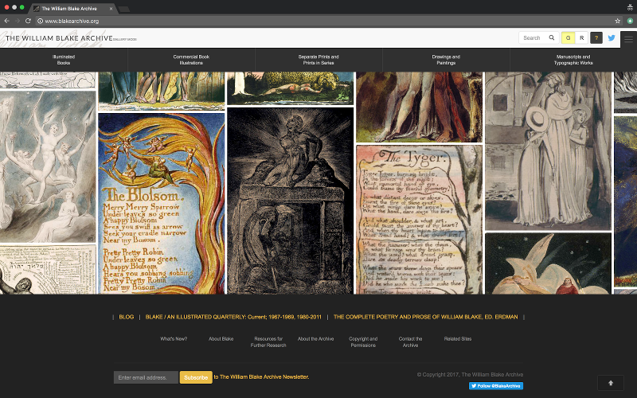
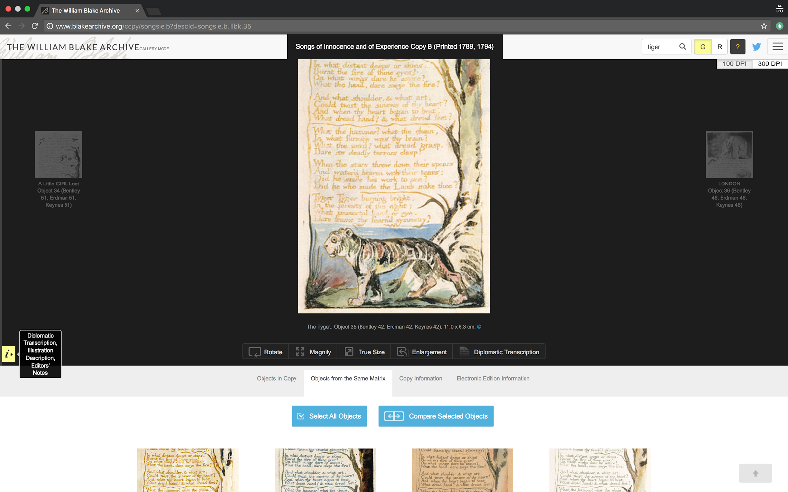
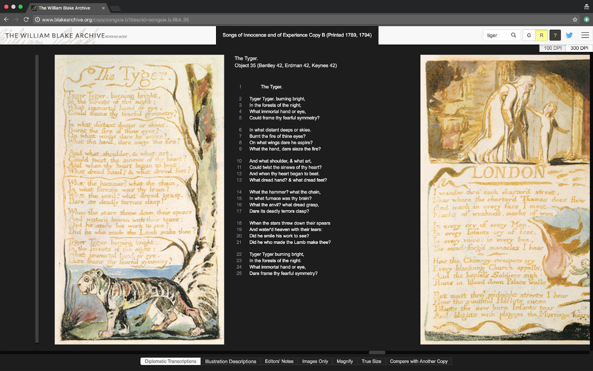
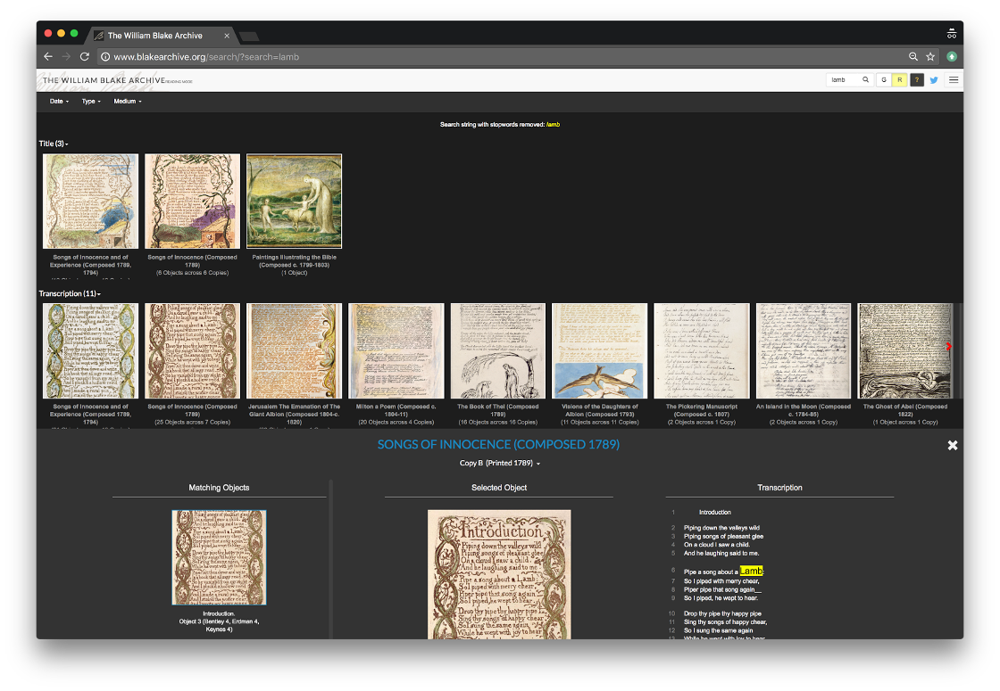
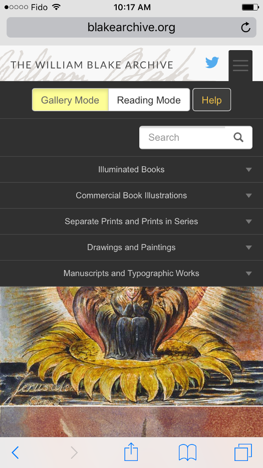

The William Blake Archive (Upgrade)
Table of Contents
Abstract
This review addresses the redesign of the William Blake Archive (WBA), which launched 12 December 2016, updating our previous review of the Archive, published in early 2017. Through this update, described as ‘a complete and transformative redesign,’ all of the content of the previous site has been retained, with improvements to the overall aesthetic appeal and functionality. These functionality updates principally consist of a modernized navigation system; a redesigned Object View page that organizes WBA’s scholarly tools within a matrix of panels; and a more comprehensive archival search engine. These new features provide users with enhanced opportunities for interacting with the objects contained in the archive. The notable shortcoming of this update is that the many of WBA’s formerly comprehensive help documentation and tutorial features have not been updated. Both new and veteran users would benefit from the reintroduction of clear, organized documentation to explain the Archive’s new features.
Introduction
On December 12 2016, the William Blake Archive (WBA) released a substantial update to its website, described as ‘a complete and transformative redesign.’ This redesign retains all content of the previous site (as described in our pre-update review) while improving upon its overall aesthetic appeal and several key issues of functionality. These functionality updates principally consist of:
- a modernized navigation system,
- a redesigned Object View page that organizes WBA’s scholarly tools within a matrix of panels, and
- a more comprehensive archival search engine, which integrates the formerly separate image description and text-based search methods.
The notable shortcoming of this update is that the WBA’s formerly comprehensive help documentation and tutorial features were not fully updated at the time of the site’s relaunch. While some of the user interface improvements are intuitive enough to require no explanation, others are considerably more complex – such as the new Object View page and its dual viewing ‘modes.’ As this review goes to press, we are pleased to see some additional technical documentation has been added to the site’s Technical Summary, including some discussion of the two viewing modes. We believe this information should be highlighted and made more accessible for users. Guidance for non-technical users is currently provided through the help (‘?’) icon, but its detail is limited. Both new and veteran users would benefit from the reintroduction of clear, non-technical documentation to explain the Archive’s features and new system of organization. Improvements in this area would enable WBA’s considerable aesthetic and functional updates to become fully accessible and useful to its audience as an improved Scholarly Digital Edition (SDE).
Upgrade strategy and execution
The Archive’s redesign team was headed by co-editor Joseph Viscomi. Ashley Reed served as the Consultant on Special Projects and former Project Manager, Joseph Fletcher as the Managing Editor, and Michael Fox as the Assistant Editor and system architect of the upgrade’s front and back end. For more information on the individuals and organizations involved in the upgrade, please see WBA’s formal update announcement from 12 December 2016.
The Editors began directing the process of architecting a new site in late 2013, and in early 2014 partnered with UNC’s Libraries and ITS Research Computing to re-conceptualize the public face of the Archive so that it would ‘again set the gold standard for digital humanities projects’ (WBA, 12 Dec 2016). The new back end was built using the open source, object-relational database system, PostgreSQL, in combination with the open source enterprise search platform, Solr. The new front end was created using the AngularJS framework, a structural framework meant to assist developers in building dynamic, single-page applications. In recent months, WBA published a more detailed summary on its new system architecture and basic front-end navigation in its Technical Summary.
Overview of changes to user experience
The updated WBA features a visually appealing, high-quality colour homepage, with a rotating series of images from Blake’s work displayed in a tiled form. One of the greatest improvements to the site is its static drop-down top menu (and anchored bottom screen menu), now accessible from the homepage and every other page within the site. The reading and gallery modes offer two different systems for interacting with the objects in the archive, enabling various scholarly tasks.
There is no longer a separate page for help documentation; instead, navigational instructions, searching instructions, or an explanation regarding the use of different viewing modes is available in the help (‘?’) icon depending upon which page-type the user is visiting. It was not clear to us immediately that the information contained in the help icon was dynamic, changing based on wherever one was on the site. Although this dynamic icon provides important information, we believe it would be useful to have all site documentation gathered in a single place as well, including both site-usage methods and terminology. A series of short video tutorials could also greatly enhance user accessibility and full utilization of the archive.
Changes to publication and presentation
Site appearance and structure

Structurally, the AngularJS framework has been leveraged to improve upon the Object View page. Each artifact’s scholarly tools and editorial supplementation are now accessible within the Object View page, organized in a matrix of panels. This change addresses our primary criticism of the original site, which was programmed to open these features in new, individual browser windows. Now, rather than having to navigate and arrange many additional windows in order to view comprehensive information about an object, informed users are able to quickly and easily navigate between panels and view all object-associated information within a single page. This transformation allows the complexities of Blake's works to be better viewed, explored, and compared.
Navigation
Another major shortcoming of the former WBA site was its lack consistent navigation features. With this upgrade, the problem has been addressed. New to WBA are two banner menus, permanently anchored to the top and bottom of the site at all times. The top menu helps users navigate archival content, while the bottom links users to the WBA’s associated works, meta writings, and scholarly material.
The top menu is now the user’s sole navigatory tool to explore WBA’s archive of digital artifacts. It consists of the following:
- A search bar, which requires the user to enter a keyword in order to initiate a search and be redirected to the the filter-reliant Search Results page.
- An expandable hamburger menu of five main tabs (illuminated books, commercial book illustrations, separate prints and prints in series, drawings and paintings, manuscripts and typographic works) that usefully organize Blake’s works. Within each submenu are chronological indices of Blake’s works, divided into the Editor’s medium-based categories. Clicking on the title of a work will open its Work Information page, from which individual copies/objects can be opened in the Object View page.
- A toggle button between the letters ‘G’ and ‘R’ that allows the user to alternate between two ‘modes’ for experiencing the Object View page – Gallery mode and Reading mode.
- A help icon, demarcated by a question mark (‘?’). When clicked, this icon will open a panel which contains explanatory information about Gallery and Reading mode, and additional information specific to the type of page the user currently has loaded. This means the contents of the help icon panel changes based on whether the user is on the homepage, the Object View page, the Search Results page, etc.
The bottom menu directs users to the Archive’s supplementary scholarly material and information about the site, highlighting:
- WBA’s official blog, which has also received a substantial UI update
- The ‘Blake / An Illustrated Quarterly’ archive
- ‘The Complete Poetry And Prose Of William Blake, David Erdman’: an electronic version of Erdman’s revised 1998 scholarly edition of Blake’s poetical works, and a feature of the original site which has been given new prominence here
The bottom menu also sub-hierarchically links to the site’s other features, such as its biographical information on Blake, the detailed and important ‘About the Archive’ section, WBA’s recommended resources for further research, and so on. All content of the original site appears to have been preserved in these static pages, with the exception of the site’s Virtual Lightbox applet, Help page, and now outdated java-based tutorial, the ‘Tour of the Archive.’ At the time of update, there was no indication if or when the Virtual Lightbox and/or its function as a digital workspace would be redeveloped and reintroduced to the updated site. In September 2017, however WBA appended a note to their Technical Summary section announcing that in the near future it will be adding two substantive additions to the site: A revamped Lightbox application and a new exhibition space for the publication of peer-reviewed exhibitions. Meanwhile, the absence of a renewed Help page is more immediately concerning. The help documentation provided by the help icon panel is considerably more limited than its historical precedent. Hopefully this issue will be addressed in the near future to help new and old users become acquainted with the new site’s design.
Object View
Objects in the Archive now open in the central panel of the website’s responsive page layout. As mentioned, there are two different ‘modes’ of view that can be toggled between on the Object View page. These modes represent two different remediations of the editorial features affixed to its archived objects. Rather than isolating an object’s relevant editorial features into individual pop-up windows, as was previously the case, the site’s new framework-based model allows users to mix and match the information they want to see within a matrix of panels and according to a ‘Gallery’ or ‘Reading’-based visual ‘mode.’

Below the central panel is a container that allows the user to tab between the following panels:
- Objects in Copy – this panel presents thumbnails of all the objects that exist in the open copy of the work. These objects will open in the central panel when clicked.
- Object from the Same Matrix – if multiple copies of an object exist, this panel is present and showcases the thumbnails of all its existing copies (openable in the central panel when clicked). These thumbnails can also be selected via a corner checkbox for side-by-side comparison in the central panel – a remediation of the former WBA’s important ‘Compare’ feature.
- Copy Information – this panel presents the available bibliographic information of the copy to which the object belongs.
- Electronic Edition Information – this panel presents the copy’s full digitization record.
The rest of WBA’s scholarly features are appended to the left of the page within a small yellow ‘i’ tab (presumably for ‘Information’). When clicked upon, this tab expands a panel on the left containing the object’s Illustration Description, Editor’s Notes, and (in its second placement on this page) the Diplomatic Transcription. As the name suggests, by design Gallery Mode treats the digital photo-facsimiles as central, and makes readily available the tools that assist with viewing (rotate, magnify, view full size) and descriptions relevant (such as the “illustration description) and editor’s note on the original object itself. The Gallery Mode allows for the diplomatic transcription to be viewed either to the right (when the bottom diplomatic display button is displayed) and to the left (when the left-hand button is clicked). It is not clear why this redundancy has been introduced.

Reading mode also has a line of buttons along the bottom of the central panel that gives users the option to replace the default Diplomatic Transcription with the following features:
- Illustration Description
- Editors’ Notes
- Images Only
- Compare with another Copy. Here, the Compare feature acts by presenting all selected copies of each object uncollated and in chronological order.
Reading mode excludes some of the object-based critical tools of Gallery mode: most noticeably the Copy Information and Electronic Edition Information, as well as the extent of its image manipulation tools. However, in the case of Blake’s illuminated books, it allows users to read through the entire copy of a work in a closer format to how it was meant to be consumed. The horizontal, scrollable format makes an optical ‘reading’ of Blake a much more feasible and authentic experience than the formerly object-isolating iteration of the Archive allowed.
WBA presents these two modes without suggestion as to how either might be used for distinctive activities, but according to our assessment:
- Gallery mode appears to be intended for material scholars who want to engage with Blake on an artifact-by-artifact level, and who want to be able to examine his creative objects with all the scholarly tools and material associated them.
- Reading mode appears to exist for scholarship that involves viewing a work as a whole, and for consuming Blake’s works as literature and/or in their entirety.
Search engine

- Date – Restricts the results by composition and/or printing date, or range of dates.
- Type – Limits the search for the user’s keywords to one or more of the following information fields: Title, Transcription, Image Tag, Editors’ Note, Illustration Description, Copy Information, and Work Information.
- Medium – Limits the search results to one or more of the medium-based categories of Blake’s works that appear in the upper menu: Illuminated Books, Commercial Book Illustrations, Separate Prints, Drawings and Paintings, Manuscripts and Typographic Editions.
Help documentation and tutorials
The most prominent shortcoming of the new site is its lack of a centralized location for help documentation and best practices. The Help page and Tour of the Archive tutorial from the site’s previous iteration were both removed, rather than updated. All that exists in terms of explicit help documentation now is an anchored help icon with dynamic contents. When clicked, this help icon expands an overlay panel onto the page with a short explanation of the Mode toggle and a short explanation of how to use whichever page the user is currently using. Specifically, these contents change according to three different page types – the Homepage, Object View, Search Results, Work Information, and the Archive’s static pages (e.g. ‘About of the Archive’, ‘About Blake’, etc.). Unfortunately, the icon gives no written or visual indication to the user that its contents change based on the page-type, which can preclude users from bothering to open the function again when they get lost or confused.
While intuitive interface design has been for the most part successfully employed in the site update, the lack of a new introduction to and thorough explanation of WBA’s scholarly tools and their placement in its user interface creates an unneeded barrier for both new and old users attempting to find their bearings.
Mobile

Technical Accessibility
While not readily apparent upon its initial upgrade, WBA has revealed improved technical accessibility several months into its new iteration. XML files are now directly attached to each object for view under its Electronic Edition Information, and an API tab has been added to the About the Archive section for users who wish to mine WBA’s data. Finally, in its Technical Summary, WBA now links to the open source repositories of its github organization, blakearchive. This improved access to basic site data is a boon both to web developers and data analysts in the digital humanities field.
Questions of Legacy
This upgrade was not formerly announced to the public until the new site was launched on December 12, 2016, entirely replacing the previous iteration of the site. While some of the Archive’s static pages have been preserved and are accessible via entries on Internet Archive's Wayback Machine (some of which are linked in our review of the old site) WBA has not made it clear if a legacy version of the website pre-upgrade still exists, and/or if it will ever again be accessible by public users. The removal of the old site raises certain questions about the conservation of legacy digital projects: might it have been beneficial for the longest running iteration of one of digital humanities’ longest running SDEs to still be accessible, even if it is no longer the most up to date iteration of the project? While outdated in terms of modern website standards, WBA’s former incarnation was a powerful and fascinating demonstration of early SDE development. Arguably, the decision to take down one of the earliest and most influential work of digital humanities’ scholarship represents a loss. An appending question of legacy relates to the fact that due to its current programming and design, WBA’s current incarnation prevents its web pages from being easily archived by the public using Internet Archive’s Wayback Machine. With this development, how difficult will it be for most public observers to track changes and progress in WBA and similar digital humanities projects? And is this something the field should be concerned about?
Conclusion
This upgrade to the WBA preserves the project’s extensive and rigorous collection of scholarly-mediated objects, while radically reinventing its front-end into a framework-based structure. This structure remediates scholarly features previously openable in pop-up windows into a collection of mix-and-match panels or tabs—better presenting WBA’s archived objects in tandem with their scholarly context. Many of the site’s new features, like horizontal scrolling and large image display, deliver appreciable improvements for the academic study of Blake as an artist and poet. However, the site requires renewed documentation to provide new and continuing users with clear instructions on how to use the site.
The upgrade has also improved WBA’s technical accessibility - improving access to object XML, introducing a site API for data mining, and making public its open-source github repositories. These additions provide digital humanities technologists with new ways to inspect and interact with the WBA project. The removal of the old site also raises important questions about the cultural legacy of digital humanities sites, and whether elements of the original interface should be preserved along with the project’s data.
@article{wba_upgrade,
author = {Crawford, Kendal and Levy, Michelle},
title = {The William Blake Archive (Upgrade)},
journal = {RIDE – A review journal for digital editions and resources},
number = {7},
year = {2017},
doi = {10.18716/ride.a.7.5},
url = {https://doi.org/10.18716/ride.a.7.5},
}TY - JOUR
AU - Crawford, Kendal
AU - Levy, Michelle
TI - The William Blake Archive (Upgrade)
T2 - RIDE – A review journal for digital editions and resources
IS - 7
PY - 2017
DA - 2017/12
DO - 10.18716/ride.a.7.5
UR - https://doi.org/10.18716/ride.a.7.5
PB - Institut für Dokumentologie und Editorik e. V.
LA - en
ER - Crawford, K., & Levy, M. (2017). The William Blake Archive (Upgrade). RIDE – A review journal for digital editions and resources, (7). https://doi.org/10.18716/ride.a.7.5Crawford, Kendal, and Michelle Levy. "The William Blake Archive (Upgrade)." RIDE – A review journal for digital editions and resources, no. 7, 2017. https://doi.org/10.18716/ride.a.7.5.Crawford, Kendal, and Michelle Levy. "The William Blake Archive (Upgrade)." RIDE – A review journal for digital editions and resources, no. 7 (2017). https://doi.org/10.18716/ride.a.7.5.